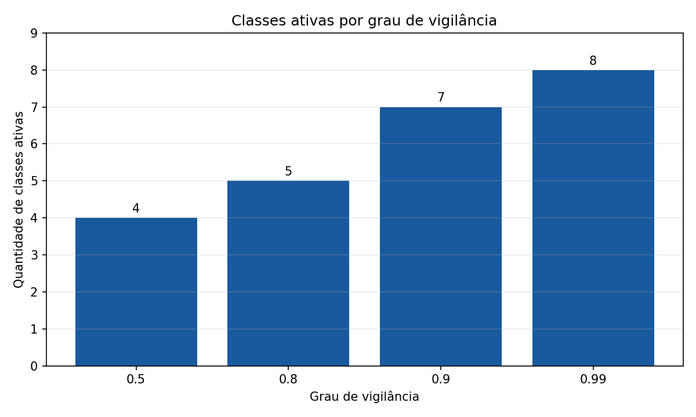
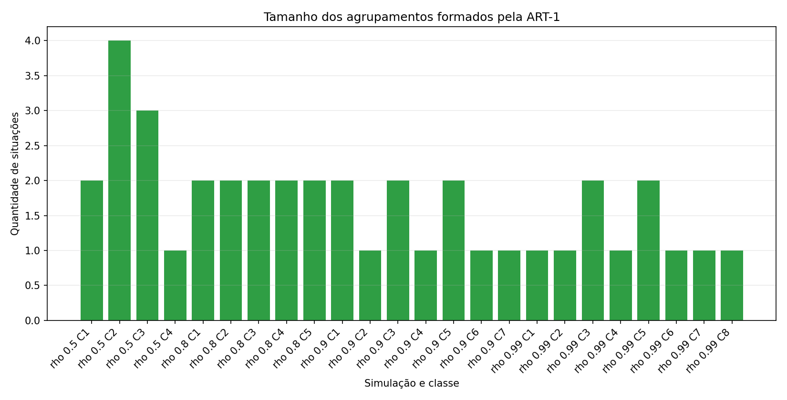

Configuração utilizada
A rede ART-1 foi simulada com aprendizagem rápida. Cada situação é comparada com as categorias existentes; se o protótipo vencedor atende ao grau de vigilância, a situação é agrupada nessa classe. Caso contrário, uma nova classe é criada.
...Situações analisadas
...Variáveis binárias
...Graus de vigilância
...Alpha da função de escolha
Classes ativas por vigilância
| Vigilância | Classes ativas | Agrupamentos |
|---|---|---|
| Carregando dados... | ||

Agrupamentos detalhados
Carregando dados...

Resposta
Carregando resposta...